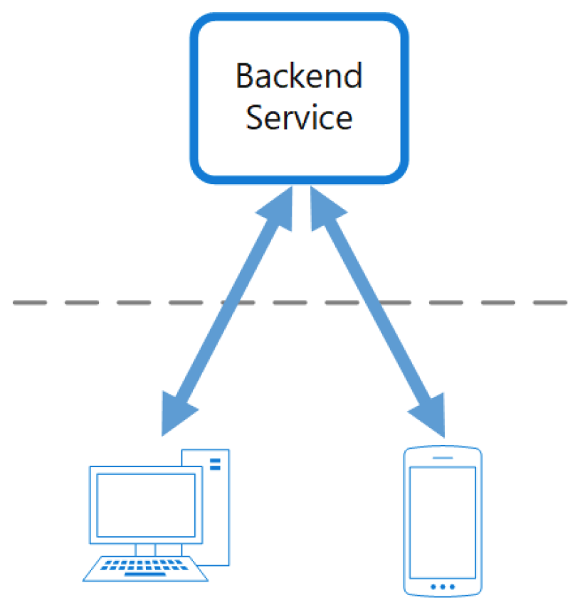
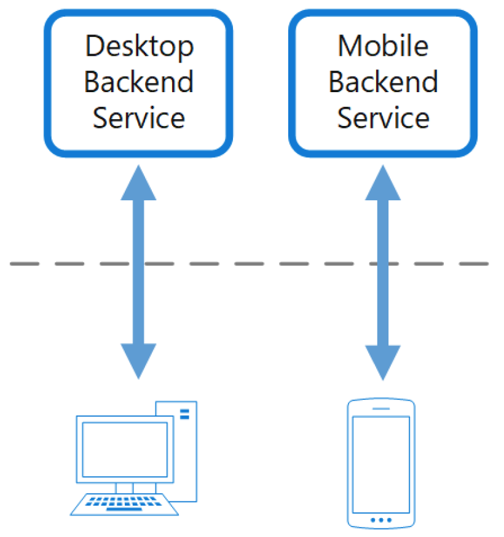

前端专属的后端模式(Backends for Frontends)
为特定的前端应用或界面创建不同的后端服务。当你需要避免为多种界面定制同一个后端时，该模式十分有用。
背景问题
一个应用最初往往是以桌面web UI为目标而开始设计的。通常，会同时并行开发一个为该UI提供所需特性的后端服务。随着应用用户数的增长，移动应用会被开发出来，而且必须与同一个后端进行交互。这个后端服务便变成了一个通用的后端，需要同时满足桌面和移动界面的需求。
但是，在屏幕尺寸、性能和显示限制方面，移动设备与桌面浏览器的能力往往是有显著差异的。结果会导致移动应用对后端的需求与桌面web UI也是不一致的。
这种差异体现在对后端需求的相互矛盾上。后端需要经常发生显著的变更，以同时满足桌面web UI和移动应用的需求。通常，每种界面会由不同的前端团队来打造，这就导致后端成为开发过程中的瓶颈。互相冲突的升级需求，以及需要保持后端服务同时为两种界面而工作，都会导致花费大量精力在这个唯一的可部署资源上。

随着开发活动不断聚焦于后端服务，有可能会产生一个独立的团队来管理和维护后端。最后，会导致界面和后端开发团队之间的脱节，并为后端团队增加负担，因为需要在不同UI团队的互相矛盾的需求之间作出平衡。当一个界面团队需要后端进行修改时，这些修改必须经过其它界面团队的验证，才能集成到后端服务中去。
解决方案
为每种用户界面创建一个单独的后端。对每个后端的行为和性能进行精心的调整，以最佳匹配对应前端环境的需求，而不用担心会影响到其它前端体验。

因为每个后端是为某种界面量身打造的，就可以为该界面进行专属的优化。结果，与试图满足所有种类界面的通用后端相比，专属的后端会变得更小、更简单，而且很可能更快。每个界面团队对于控制自己的后端有自主权，而不用依赖于一个集中式的后端开发团队。这为界面团队在后端服务的语言选择、发布节奏、工作优先级排序、特性集成等方面提供了灵活性。
问题与注意事项
- 需要考虑部署多少个后端。
如果不同的界面（比如移动客户端）会发送同样的请求，考虑是否有必要为每种界面都实现一个后端，还是一个单独的后端就可以满足。
当实现这种模式时，不同服务之间的代码重复很有可能出现。
专属于前端的后端服务应该只包含客户端特定的逻辑与行为。通用逻辑和其它公用特性应该在你的应用的其它某个地方被管理起来。
思考这种模式应该如何在开发团队的职责上体现出来。
- 考虑需要多长时间实现这种模式。在继续支持已存在的通用后端的同时，为打造新的后端投入精力，是否会引入技术债？
何时使用该模式
在以下场景使用该模式：
- 需要为维护一个共享的或通用的后端服务而花费大量的开销。
想为特定客户端界面的需求对后端进行优化。
为调解多种界面的需求，需要为一个通用的后端进行定制。
- 对于后端另有一种可供选择的语言，更适合另外一种用户界面。
这种模式可能不适用于：
- 当各种界面对后端的请求相同或相似时。
- 当只有一种界面与后端进行交互时。
相关指导
- 网关聚合模式
- 网关卸载模式
- 网关路由模式